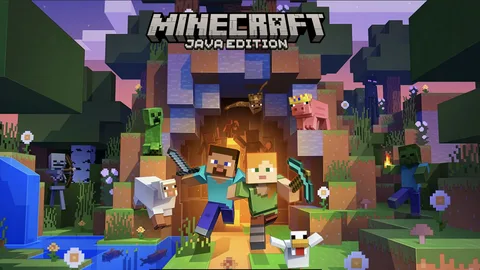
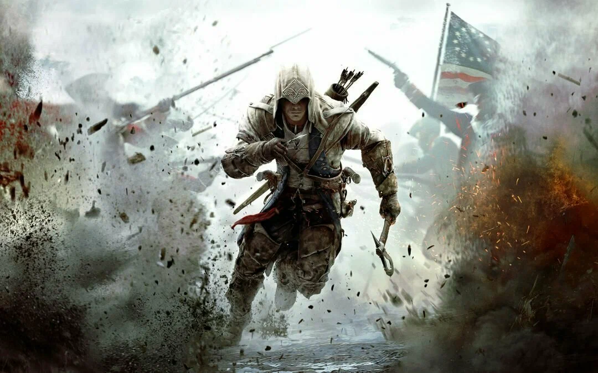
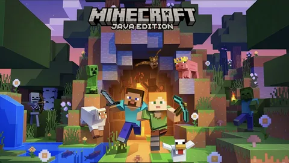
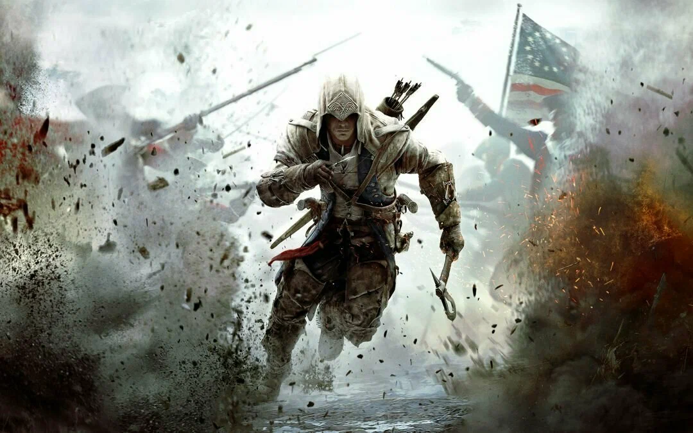
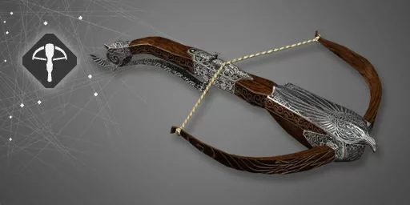
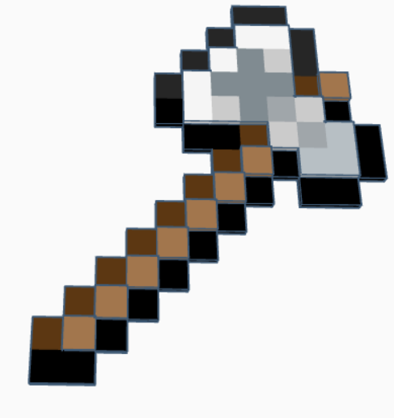

Любимое оружие в играх

Меня зовут Смирных Николай, мне 13 лет, живу в городе Североморск.
Мои увлечения - шахматы, пауэрлифтинг(название тренировки), изучение английского языка, тренировка мозга в виде решения задач по математике и физике и киберспорт.
Но всё-таки мне больше всего нравится киберспорт, а именно играть в Assassin's creed, Counter Strike и Minecraft.
 



| Название | Игра | Изображение | Причина |
|---|---|---|---|
| Арбалет | Assassin's creed |  | Тише револьвера, быстрей в использовании, можно носить с собой больше стрел, чем патронов для револьвера (при покупке оружия, дополнительно даётся мешочек, куда можно сложить патроны. Так мешочек для арбалета будет всегда больше, чем для револьвера (30vs20)) |
| Топор | Minecraft |  | Быстро добывает деревья, необходимые вначале игры (необходимее чем кирка. Лопата вообще толком не нужна(только землю копать)). Наносит больше урона, чем меч. (сравниваю только меч, кирку, лопату и топор. Трезубец, копье и молот не в счёт) |
| M4A1-S | Counter Strike 2 | |
Такое же сильное как АК-47, но проще в использовании (отдача меньше). Также есть глушилка, которую можно снять. Также быстрая перезарядка, и быстро ходишь, когда он в руках. Единственный минус - 80 патронов всего, 20 в обойме (20/60) |